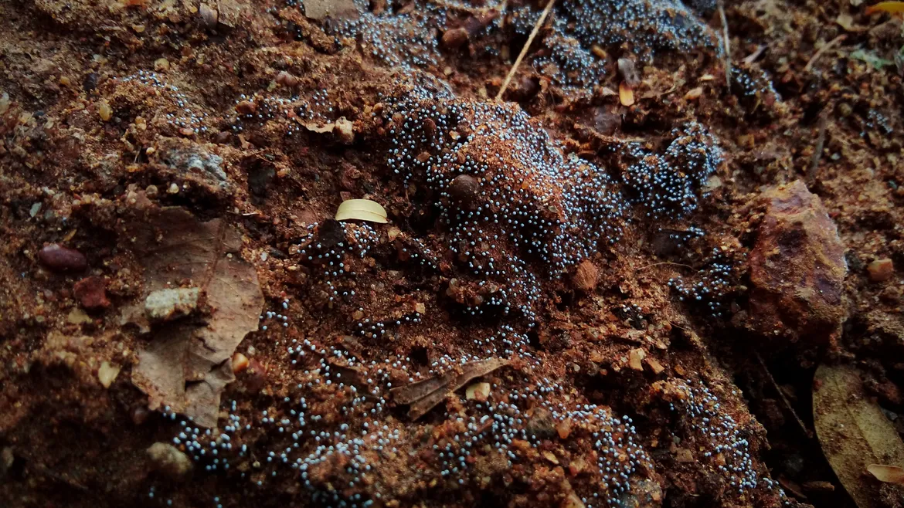

Yard drainage
Standing water on red clay given a route out of the yard and away from the house.
Excavation · Macon, GA
We walk the yard with you in the rain before we dig anything.

Diagnose it yourself
Likely fix: French drain
Sample pricing
Get this pricedWe'll pre-fill your quote with this diagnosis.
What we dig
Standing water on red clay given a route out of the yard and away from the house.
Pipe in washed stone and fabric, run downhill to a daylight outlet or the ditch.
A shallow grassed dip shaped across the lot so storm water walks instead of pooling.
Clogged or crushed pipes dug out and reset so the road ditch flows again.
Gullies and washed-out drives filled, packed and rocked after a summer storm.
Footings and crawlspace digs in clay, with the spoil kept off your lawn.
Trenches for water, power and sewer lines, dug after the locate marks.
Crusher run base and top rock spread on red clay so the drive stops rutting.
New ponds dug and old silted ponds cleaned out, with the dam edges shaped.
Storm limbs, old slabs and dirt piles loaded up and hauled off the lot.
That ZIP is outside our current route. Call us at (478) 555-0121 to talk through it.
How we work
What it costs
| Job | From (Sample) | To (Sample) | Note |
|---|---|---|---|
| French drain | $2,400 | $6,800 | most 50-150 ft runs to daylight |
| Swale and regrade | $1,500 | $5,500 | with straw and seed |
| Driveway culvert reset | $1,100 | $2,900 | pipe, rock and labor |
| Washout repair | $600 | $2,500 | fill, pack and rock |
| Pond cleanout | $4,500 | $15,000 | depends on silt and access |
Sample pricing. If we hit ledge rock, we stop and talk price before we break anything.
Get a real numberSample reviews
Sample review"Our brick ranch on the north side had red mud coming under the back door every July. Otis walked the yard with me in the rain, pointed at where the water wanted to go, and gave it a path. First dry summer in years."
Sample review"Good people. They ran the drain out past the pines to the ditch and raked the clay back so smooth my wife asked if they'd even dug."
Sample review"The pipe under our drive was crushed flat and the ditch backed into the yard. They dug it up, set a bigger pipe and rocked both ends. Rained hard two days later, water went right through."
Sample review"A thunderstorm cut a gully clean through our gravel drive. Called that evening, they were out the next morning, filled it, packed it, and put in a little turnout so it won't happen again."
Sample review"Our old farm pond had silted up to a mud flat. Otis's son ran the machine for three days, cleaned it down to the old bottom and shaped the bank. Fish are back, so are the herons."
Sample review"The neighbour's new house sent all his runoff into our garden. They shaped a swale along the line and seeded it. Nobody had to argue, the water just goes around now."
Our rain promise
"First dry summer in years."
— Sample review
Get a price